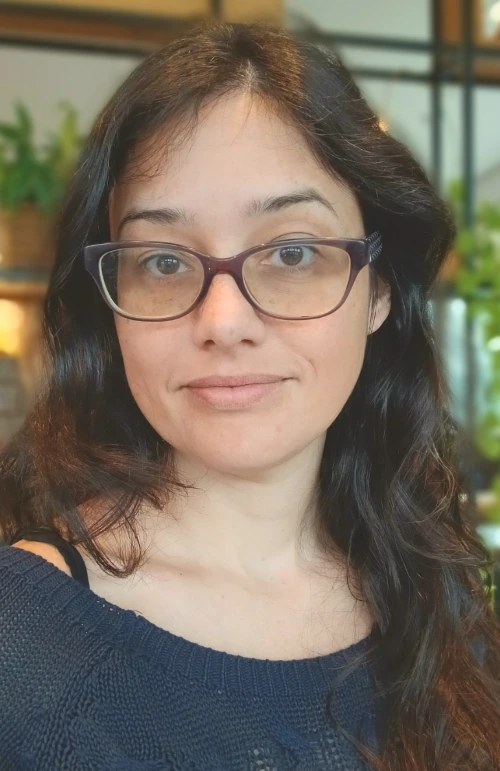

Entre ciência, arte e expressão.
Olá, sou a Suzane! Gosto de observar, pesquisar, fazer conexões e entender o que existe por trás das coisas. Na arte, encontrei minha linguagem de expressão.

Um repertório feito de descobertas
Nasci em Curitiba e cresci entre desenhos, histórias e curiosidade. Ainda jovem, descobri o bordado em ponto cruz e os origamis: práticas que me ensinaram a olhar os detalhes, experimentar e transformar.
Na graduação em Geologia, ampliei meu olhar sobre a natureza e os processos da Terra. Mais tarde, aprofundei meus estudos em desenho e fotografia. A formação em Secretariado e a experiência administrativa também ajudaram a dar estrutura à minha vontade de empreender.
O nascimento do Studio Base
Projetos como Clado Único, Coguflores e Amora Festiva nasceram desse encontro entre natureza, imaginação e cotidiano. A maternidade trouxe novos ritmos e perspectivas.
O Studio Base Visual reúne esses aprendizados em um espaço de criação: uma forma de transformar ideias, sentimentos e identidades em cores, formas e comunicação visual com personalidade.
O que você gostaria de expressar?
Comece contando sua ideia. O processo de identidade visual começa com um formulário estratégico.
Solicitar formulário estratégico ↗